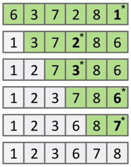
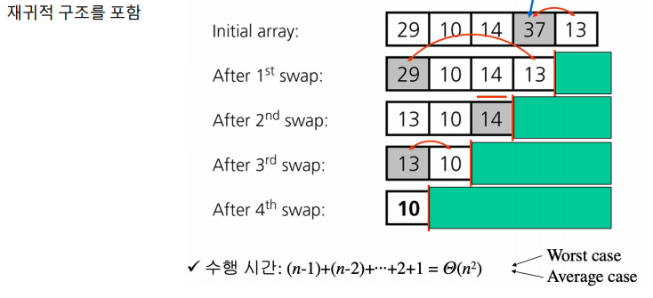
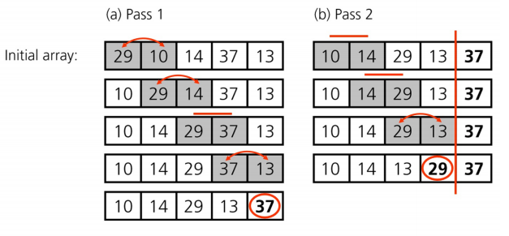
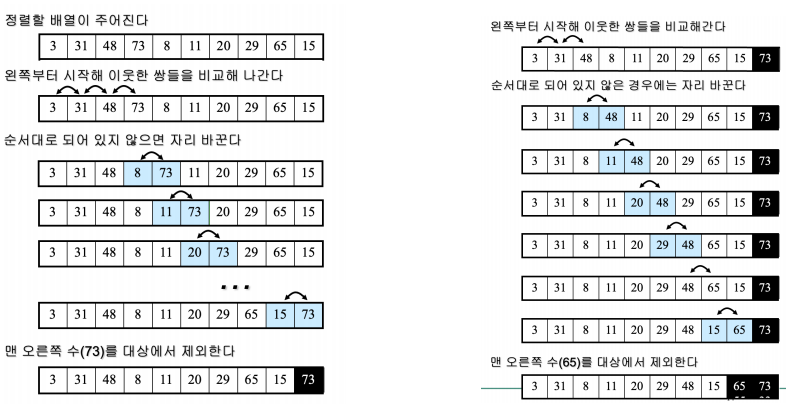
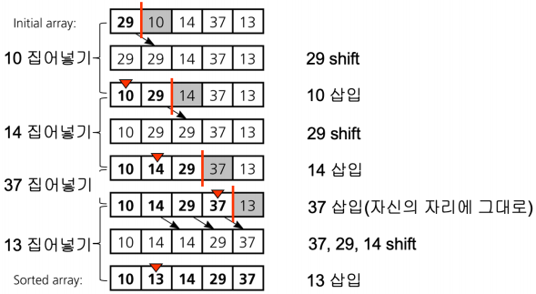

Chapter 3. 정렬 알고리즘(Sorting Algorithm)¶
0절. 정렬 알고리즘¶
정렬 알고리즘(Sorting Algorithm)¶
- n개의 원소를 크기 순서로 배열
- 알고리즘의 설계와 분석, 생각하는 방법의 훈련 방식
- 배열 표기
- A[1], ..., A[n] => A[1, ... n] 으로 표기
- 수행시간
- 대부분 : \(Θ(𝑛^2)\) ~ \(Θ(𝑛 log 𝑛)\)
- 입력이 특수한 경우 : \(Θ(𝑛)\)
- 입력이 k 자릿수 이하 OR k를 넘지 않은 자연수인 경우
1절. 기본 정렬 알고리즘¶
기본 정렬 알고리즘 종류¶
- 평균 \(Θ(𝑛^2)\)의 시간이 소요되는 정렬 알고리즘
- 선택 정렬 (Selection Sort)
- 버블 정렬 (Bubble Sort)
- 삽입 정렬 (Insertion Sort)
선택 정렬 (Selection Sort)¶
- 배열 A[1, ..n]에서 가장 큰 원소 탐색 후 그 원소와 배열의 끝자리 A[n]과 자리 변경
- 가장 큰 원소가 A[n]으로 이동
- 정렬 수행 구조(최대 -> 최소 변경 가능 : 정렬 사용자 마음대로)
각 loop마다
(1) 최대 원소 탐색
(2) 최대 원소와 맨 우측 원소 교환
(3) 맨 우측 원소 제외
원소 하나 남을 때까지 위의 loop를 반복
선택 정렬 코드 구현(Python)¶
# A : 정렬할 리스트
def SelectionSort(A):
n = len(A)
for last in range(n - 1, 0, -1): # ① 미정렬 구간 끝값
max_idx = 0 # 최댓값 위치 초기화
for i in range(1, last + 1): # ② 미정렬 구간 순회(1 ~ last + 1)
if A[max_idx] < A[i]:
max_idx = i # 최댓값 갱신
A[last], A[max_idx] = A[max_idx], A[last] # ③ 최댓값 <-> 미정렬 구간 끝값 교환
-
수행 시간 계산 과정
-
① 미정렬 구간 끝값 결정 루프 (n-1)번 반복 : n-1이 0이 될때까지 순회
- ② 최댓값 갱신을 위한 비교횟수 : n-1(최악의 경우), n-2, ..., 2, 1(최선의 경우)
-
③ 교환의 상수 시간 작업
-
최종 수행 시간 : \((n-1) + (n-2) + ... + 2 + 1 = Θ(𝑛^2)\)
- 최악의 경우(Worst Case)이자 평균의 경우(Average Case)
선택 정렬 예시¶

- 미정렬 구간에서 가장 큰 항목을 탐색해 맨 뒤(미정렬 구간 끝) 항목과 교환
- 다음으로 큰 항목을 찾아 그 앞 항목과 교환
- 모든 항목이 정렬될 때까지 과정 반복
선택 정렬 과정¶

선택 정렬 문제¶
- 원소 n개를 선택 정렬하는 과정에서 두 원소의 크기를 비교하는 작업을 기준으로 시간 복잡도를 계산하였다. 두 원소를 교환하는 일은 최소 몇 번에서 최대 몇 번까지 일어날 수 있는가?
- 최소 횟수 : 0번 -> 모든 원소가 정렬이 되있던 경우
- 최대 횟수 : n-1번 -> 모든 원소를 정렬해야 하는 경우
- 하지만 둘의 수행 시간은 동일 !
- why? 선택 정렬은 값을 비교하여 정렬하기 때문
버블 정렬 (Bubble Sort)¶
- 가장 큰 원소를 우측 끝자리로 이동
- 선택 정렬과 과정이 상이
버블 정렬 코드 구현(Python)¶
# A : 정렬 리스트
def BubbleSort(A):
n = len(A)
for a in range(n): # ① 전체 패스 n-1만큼 반복
check = False # 정렬 확인 변수
for i in range(0, n - a - 1): # ② 정렬된 오른쪽 영역 제외 비교
if A[i] > A[i + 1]:
A[i], A[i + 1] = A[i + 1], A[i] # ③ 교환 작업
check = True # 교환했을 경우 True로 설정
if check == False: # 교환되지 않았을 경우 모두 정렬된 상태
break
-
수행 시간 계산 과정
-
① 전체 패스 n-1만큼 반복 : 모든 원소를 정렬할 때까지 반복
- ② 정렬된 오른쪽 영역 제외 비교 : 오른쪽 영역부터 정렬되어 제외
-
③ 교환의 상수 시간 작업
-
최종 수행 시간 : \((n-1) + (n-2) + ... + 2 + 1 = Θ(𝑛^2)\)
- 최악의 경우(Worst Case)이자 평균의 경우(Average Case)
버블 정렬 예시¶

- 정렬할 배열이 주어짐
- 왼쪽부터 시작해 이웃한 쌍 비교
- 사용자가 원하는 순서(오름차순 or 내림차순)으로 되어있지 않은 경우 자리 교체
- 맨 오른쪽 원소를 대상에서 제외
버블 정렬 과정¶

버블 정렬 문제¶
- 원소 n개를 버블 정렬하는 과정에서 두 원소의 크기를 비교하는 작업을 기준으로 시간 복잡도를 계산하였다. 두 원소를 교환하는 일은 최소 몇 번에서 최대 몇 번까지 일어날 수 있는가? ([4, 3, 2, 1]의 경우)
- 최소 횟수 : 0번 -> 정렬하지 않아도 되는 경우
- 최대 횟수 : $ \frac {n(n-1)}{2} ≈ O(n^2)$번 -> 모든 원소를 정렬해야 하는 경우
삽입 정렬 (Insertion Sort)¶
- 이미 정렬된 k개 배열에 하나의 원소를 더해 정렬된 (k + 1)개 배열을 만드는 과정 반복
정렬끼리의 차이점¶
| 선택, 버블 | 삽입 |
|---|---|
| n개의 배열에서 시작하여 크기를 줄임 | 1개 배열에서 시작하여 크기를 늘림 |
삽입 정렬 과정¶

삽입 정렬 코드 구현(Python)¶
# A : 정렬 리스트
def InsertionSort(A):
n = len(A)
for i in range(1, n): # ① 두 번째 요소부터 반복
key = A[i] # 삽입할 대상(현재 값)
j = i - 1
while j >= 0 and A[j] > key: # ② 정렬된 영역 거꾸로 탐색
A[j + 1] = A[j] # ③ 큰 값을 오른쪽으로 한 칸 이동
j -= 1
A[j + 1] = key # ④ 빈 자리에 key 삽입
-
수행 시간 계산 과정
-
① 두 번째 요소부터 반복 : 두 번째 요소부터 마지막까지 반복
- ② 정렬된 영역 거꾸로 탐색 : 왼쪽 영역쪽으로 탐색
- ③ 큰 값을 오른쪽으로 한 칸 이동
-
④ 빈 자리 key 삽입
-
최종 수행 시간
- 최악의 경우(Worst Case) : \((n-1) + (n-2) + ... + 2 + 1 = Θ(𝑛^2)\)
- 평균의 경우(Average Case) : \(\frac {1}{2}((n-1) + (n-2) + ... + 2 + 1) = Θ(𝑛^2)\)
- 최선의 경우(Best Case) : \(1 + 1 + ... + 1 + 1 = Θ(𝑛)\)
삽입 정렬 특징¶
- \(O(n2)\) 시간 소모
- 일반적인 경우 : 비효율적인 정렬 알고리즘
- 배열이 거의 정렬된 경우 : 가장 매력적인 알고리즘(버블 정렬보다 효율적)
- why? 수행 시간이 \(Θ(n)\)이기 때문
- 하지만 버블 정렬에서 swap이 일어나지 않았을 때 정렬을 종료하는 로직을 추가하면 수행 시간이 \(Θ(n)\)에 근접
삽입 정렬 귀납적 원리¶
- 배열 A[1]만 보면 정렬
- 배열 A[1, .. k]까지 정렬되어 있다고 가정
- A[k + 1] 을 적절한 자리에 위치시키면 A[1, … k+1]이 정렬
선택 정렬 / 버블 정렬 / 삽입 정렬의 비교¶
| 특징 | 선택 정렬(Selection Sort) | 버블 정렬(Bubble Sort) | 삽입 정렬(Insertion Sort) |
|---|---|---|---|
| 정렬 방식 | 최솟값 탐색 후 맨 앞으로 이동 | 인접 요소 간 비교 및 교환 | 현재 요소를 정렬된 부분에 삽입 |
| 시간 복잡도 | 최선 : \(O(n^2)\) 평균 : \(O(n^2)\) 최악 : \(O(n^2)\) |
최선 : \(O(n^2)\) 평균 : \(O(n^2)\) 최악 : \(O(n^2)\) |
최선 : \(O(n)\) 평균 : \(O(n^2)\) 최악 : \(O(n^2)\) |
| 공간 복잡도 | O(1) | O(1) | O(1) |
| 안정성 | 불안정 정렬 | 안정 정렬 | 안정 정렬 |
| 장점 | - 구현 단순 - 비교 횟수 일정 |
- 구현 단순 - 안정 정렬 |
- 구현 단순 - 거의 정렬된 경우 효율적 |
| 단점 | - 시간 복잡도가 높아 비효율적 | - 시간 복잡도가 높아 비효율적 | - 평균 및 최악의 경우 비효율적 |
| 특징 | 비교 횟수는 많으나 교환 횟수는 적음 | 인접 요소 간 비교 및 교환 반복 | 필요할 때만 위치를 변경해 효율적 |
| 적용 분야 | - 작은 데이터셋 - 교환 비용이 큰 경우 |
- 교육용 - 간단한 구현 |
- 거의 정렬된 데이터 - 작은 데이터 셋 |
안정 정렬(Stable Sort)과 불안정 정렬(Unstable Sort)¶
- 안정 정렬 : 중복된 키를 가진 요소들의 원래 순서를 정렬 후에도 유지하는 정렬
- A와 B 값이 동일하고 정렬 전 A가 B보다 앞에 있던 경우 : 순서 유지(A -> B)
- 불안정 정렬 : 안정 정렬에 해당하지 않는 정렬
| 정렬 종류 | 안정 정렬 여부 |
|---|---|
| 선택 정렬 | X |
| 버블 정렬 | O |
| 삽입 정렬 | O |
| 병합 정렬 | O |
| 퀵 정렬 | X |
| 힙 정렬 | X |
2절. 고급 정렬 알고리즘¶
고급 정렬 알고리즘 종류¶
- 평균 \(Θ(𝑛 log n)\)의 시간이 소요되는 정렬 알고리즘
- 병합 정렬 (Merge Sort)
- 퀵 정렬 (Quick Sort)
- 힙 정렬 (Heap Sort)
(여기부터 작성)